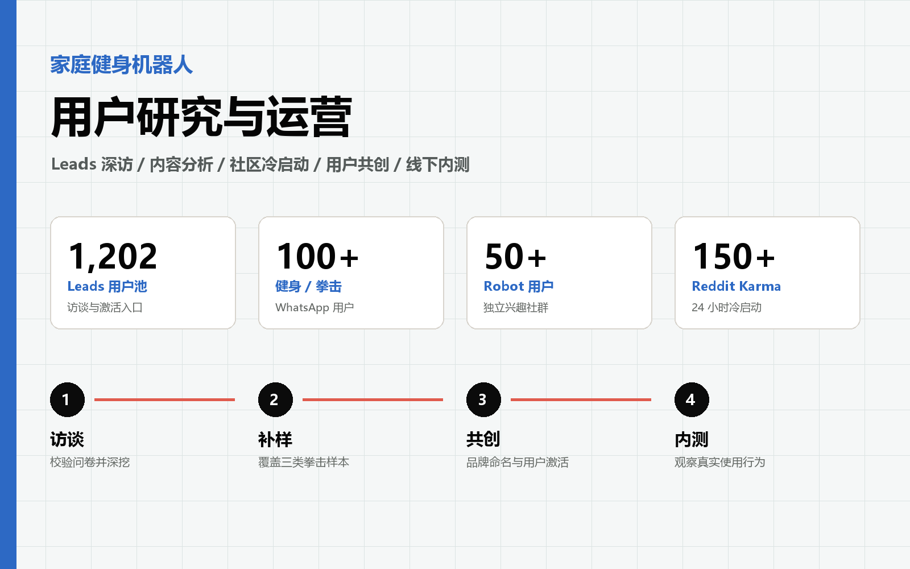

家庭健身机器人
用户研究与运营
在首轮 PMF 测试基础上，我继续补齐线上测试看不到的样本和行为证据：访谈已收集 Leads，分析不同平台的自然内容，
通过 Reddit 和跨平台私聊接触从未考虑过拳击的人，再用品牌共创激活用户，最后在线下观察真实体验。
- 时间
- 2026.07 - 至今
- 工具与方法
- Leads 访谈、平台内容分析、社区冷启动、用户共创、线下产品内测

关键成果
下列数字为可公开展示的聚合指标，不包含用户邮箱、WhatsApp 号码、原始私聊记录或投放账户信息。
1,202
可继续触达 Leads
100+
健身 / 拳击 WhatsApp 用户
50+
Robot WhatsApp 用户
150+
Reddit 24 小时 Karma
研究关系
这四项工作不是并列堆叠，而是针对 PMF 样本边界和证据强度逐步补齐。广告样本、平台内容样本和私聊样本分别覆盖不同的拳击涉入程度。
三类样本
- 广告与问卷：已经对拳击感兴趣、愿意点击的人。
- 平台内容：已经参与或持续讨论拳击的人。
- Reddit 发帖与跨平台私聊：从来没有选择过、甚至没有想过拳击的人。
证据关系
- 访谈校验问卷可信度，并挖掘问卷没有问到的真实动机。
- 内容分析补充广告没有点进来的用户，但仍可能偏向已经讨论拳击的人。
- Reddit 冷启动和私聊补足“从未考虑过拳击”的缺失样本。
四项工作：需求、方案与结论
1. Leads 访谈深挖
- 需求：问卷只能看到用户选了什么，不能确认答案是否可信，也不能覆盖用户没有被问到的顾虑。
- 方案：用 Mailchimp 触达 Leads，沉淀 100+ 健身/拳击用户和 50+ Robot 用户到 WhatsApp；按四类人群做一对一深访，并研究 Tonal、Peloton 的教练、课程和社群生态。
- 结论：高客单健身产品的价值不只是硬件和课程数量，还包括持续反馈、教练关系、社群支持和训练结果。
2. 定量研究与社区冷启动
- 需求：不感兴趣拳击的人不会点击广告；平台上的拳击相关讨论又主要来自已经参与或持续关注拳击的人。
- 方案：结构化分析 Reddit、Instagram 等平台的内容主题和互动语言；使用新账号在 Reddit 做原生内容冷启动，24 小时获得 150+ Karma；再跨平台私聊从未选择拳击的人，询问他们为什么没有考虑拳击。
- 结论：形成“已感兴趣、已参与、从未考虑”三类样本，补足广告漏斗和平台内容分析各自看不到的人群。
3. 用户共创活动
- 需求：品牌需要确定名称，同时不能一直用“邀请访谈”单向消耗已经收集的用户。
- 方案：发起品牌命名和抽奖活动，用真实的参与理由重新激活 Leads，再邀请参与者继续访谈和反馈。
- 结论：活动既解决品牌命名需求，也提供了用户重新参与的契机，把一次性问卷用户转成可继续沟通的关系用户。
4. 线下产品内测
- 需求：问卷是用户的想法，不能替代用户拿到实物后的真实行为和判断。
- 方案：设计 60 人招募与测试流程，重点观察无拳击经验用户的上手、持续兴趣、实物反馈，并与跑步机、Speediance 做对比。
- 结论：用实际操作、现场观察和体验后反馈判断产品价值是否被感知；用户看到实物后的反应，也会反向影响产品设计和市场表达。
展示图
这些图是脱敏后的网页展示版本，只用于说明运营方法和项目结构。
Leads 用户池：访谈、社群激活和后续内测的共同入口。
访谈邀约：先建立参与契机，再邀请用户投入更多时间。
用户研究与运营：从样本补充到真实体验。
品牌征名活动：满足品牌需求，同时激活已有用户。
后续触达资产：将用户反馈回流到产品和众筹准备。
脱敏边界
- 不公开用户邮箱、姓名、电话、WhatsApp 号码、Facebook 账号和原始私聊记录。
- 不公开 Mailchimp 后台、投放账户、支付系统、未发布产品细节和内部成本。
- 公开网页只使用聚合数字、方法论图、流程图和可展示版本。
返回首页